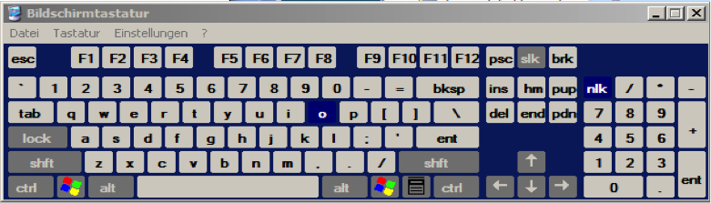
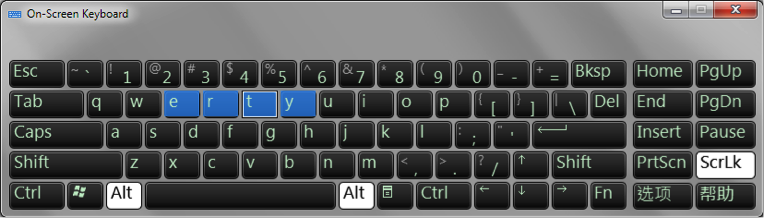
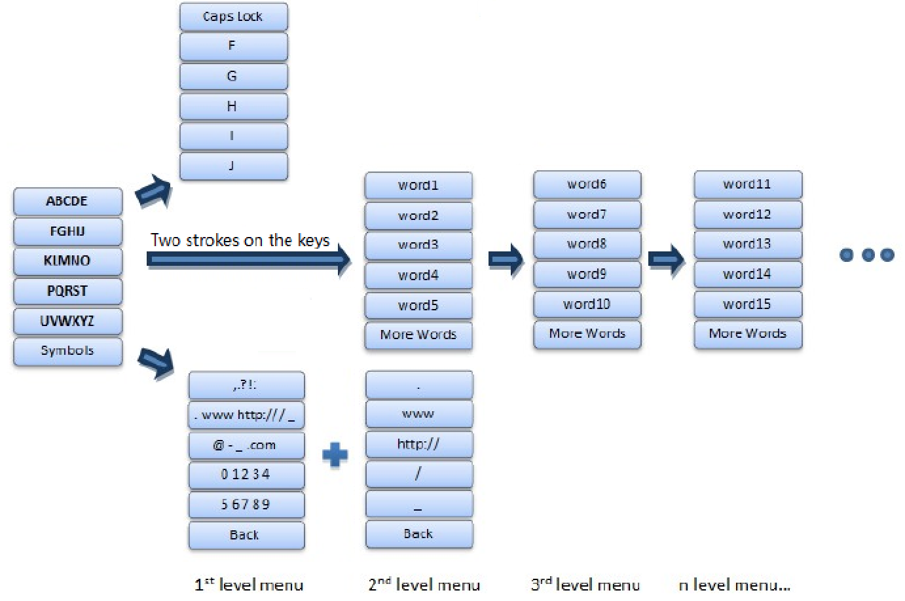
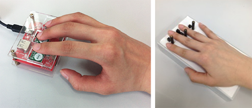
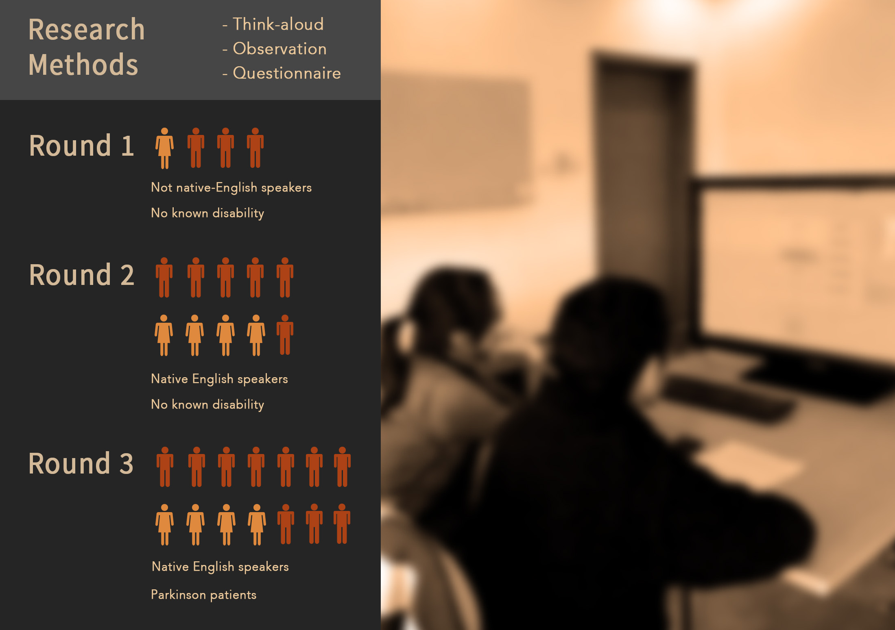
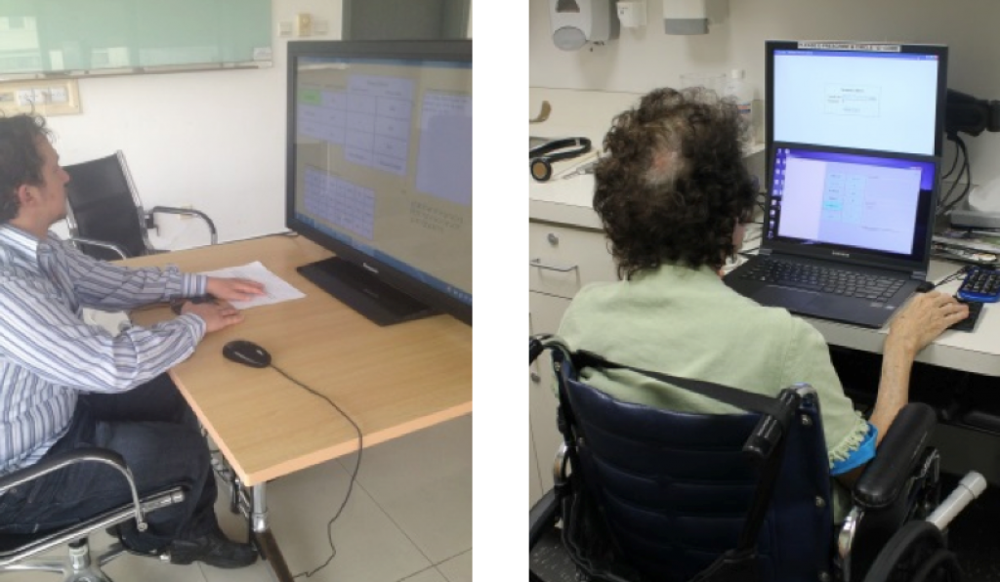

Make communication easier, improve accuracy, and save costs for disabled users.
As a user, one has to be able to talk for speech recognition, and move for gesture recognition. We proposed the system for disabled people: with a highlight going through each key, user simply click and selects words from a wordlist.
At the start of the program, without indicating specific input, the right column shows the top five frequent words from a 400,000 English corpus. The first time a key of letters from the left column is clicked, letters are expanded on the right column with a "CapsLock" key on the top of the column.
Competitors: Scanning Keyboard
In Microsoft Windows, there is a hidden "OnScreen-Keyboard". It realizes one-bit text entry by allowing the users to press just one actual key to type sentences on screen. When it is loaded, the rows are highlighted one by one. By only one keypressing, the highlighted row is selected and the scanning is switched to column (or columns in Windows 7) from left to right. With one more keypress, the desired character is selected.  
Navigation Map
We need to type words, letters and symbols in real world application. Also, function keys should be considered as well (delete, go back, look for more words, etc). After a careful thought, I created this navigation map that my design will need to follow. The interface consists of two parts: 1) capital letters in alphabetic orders on the left of arrows, 2) letters, words, and punctuation displayed on the right of the arrows. The left part is stable while the right part changes according to user's indication. When a key(left) is clicked, the system extends all the letters on that key into six separate keys (The up row in the figure).
Prototyping and Coding
I made more than 20 rounds of iteration, at the same time trying different functions, e.g. adding Send Message function, tried different word list, and different language versions.
Since different users have different physical impairments, we tested two types of input devices that take gesture input.

User Studies

We found out...
Round 1: It was more difficult for users whose first language is not based on the Latin alphabet.
Round 2:
Users sometimes find the cycle slow, but they all believe this could be very beneficial for disabled people and they find it interesting interacting with only one finger.
Round 3: One of the patients input a name of rare wine which made him feel proud of himself. The patients were especially satisfied with the send mail or SMS option.

We made usability report for each subject. Based on their feed back, the program in general has high learnability and good satisfaction. The simple structure enables a good learning curve. It is not only a tool for allowing handicapped people to text quicker, but also for integrating them in the lives of their friends and family.